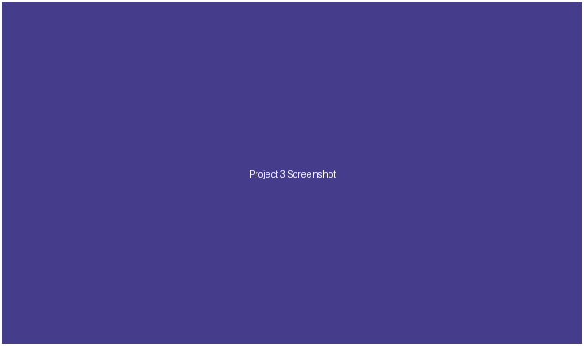

Project Three: Recipe Box
Built this on my own over about 4 weeks, Fall 2025.

Problem
My family's recipes were split between a shared folder of phone photos, a handful of bookmarked sites, and a few handwritten cards.
Approach
I built a small app for entering recipes once, tagging them by cuisine and ingredient, and finding them again by searching any of those tags. I used Python and Flask for this one.
- Tag-based search across ingredients and cuisine
- Printable single-recipe view
- Import form for adding new recipes quickly
Outcome
The whole family now adds new recipes there instead of texting photos of index cards to each other.